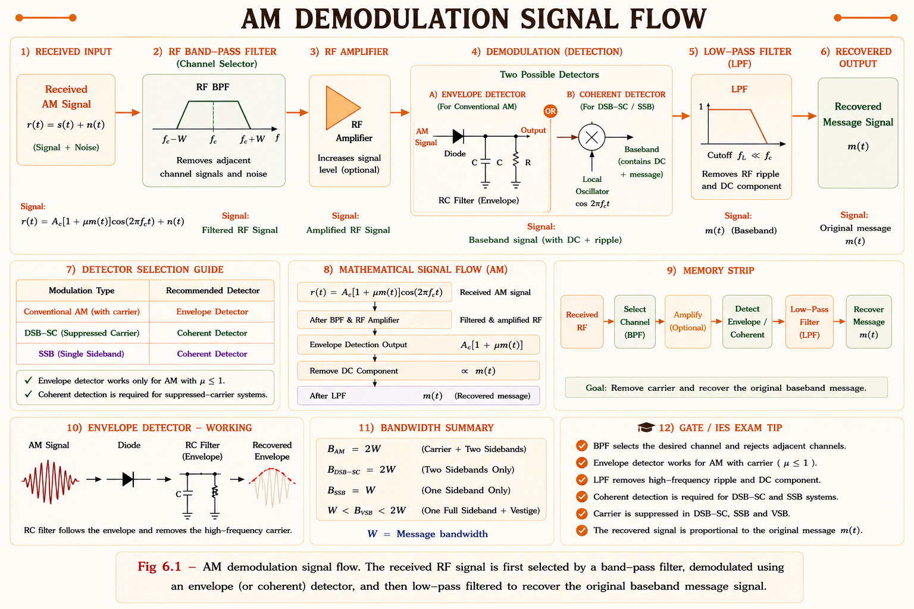
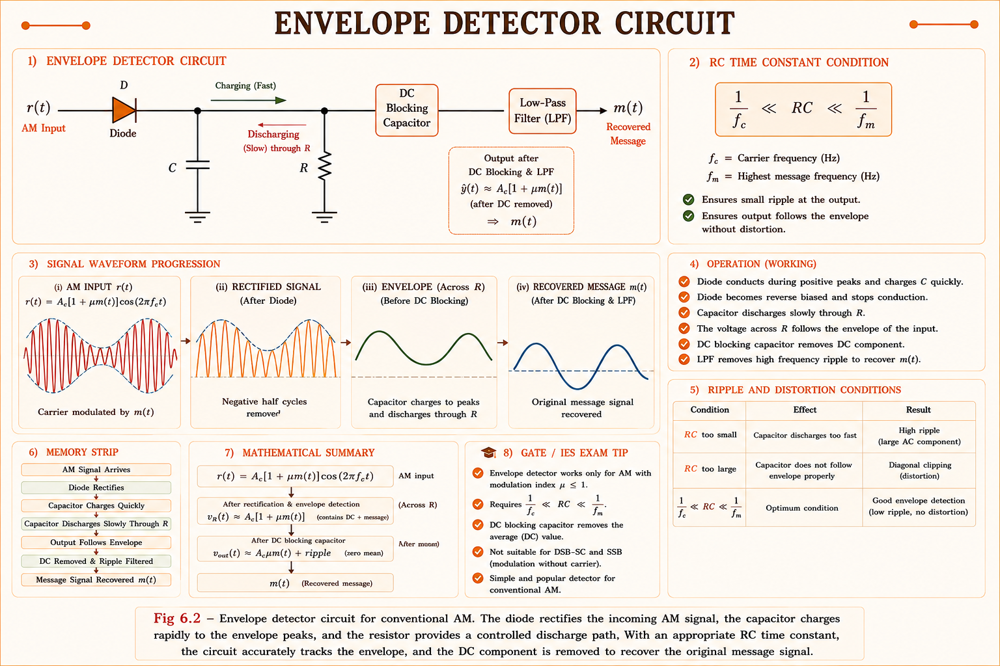
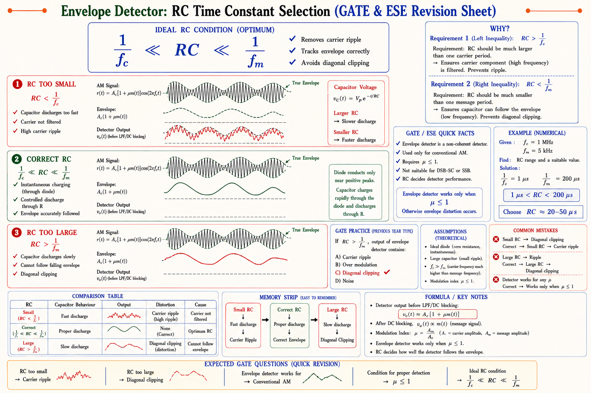
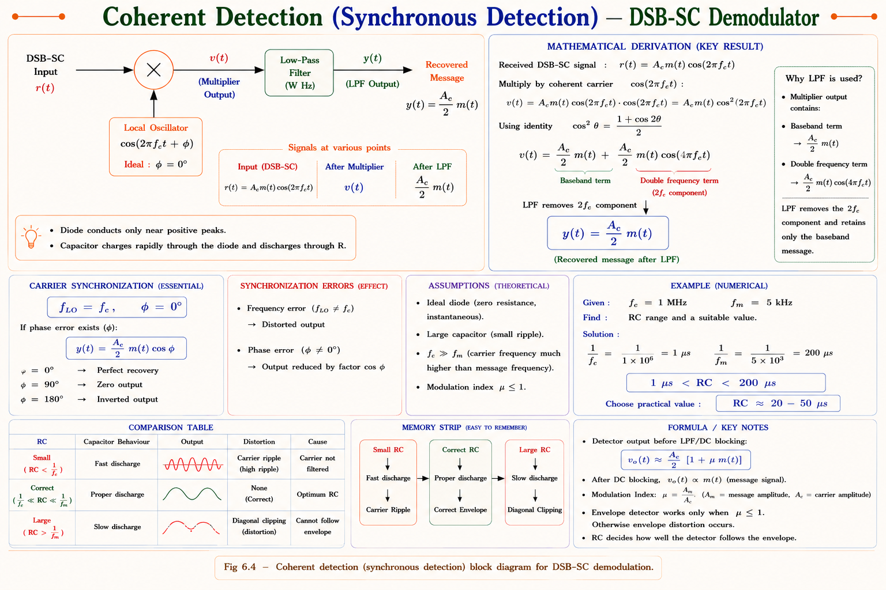
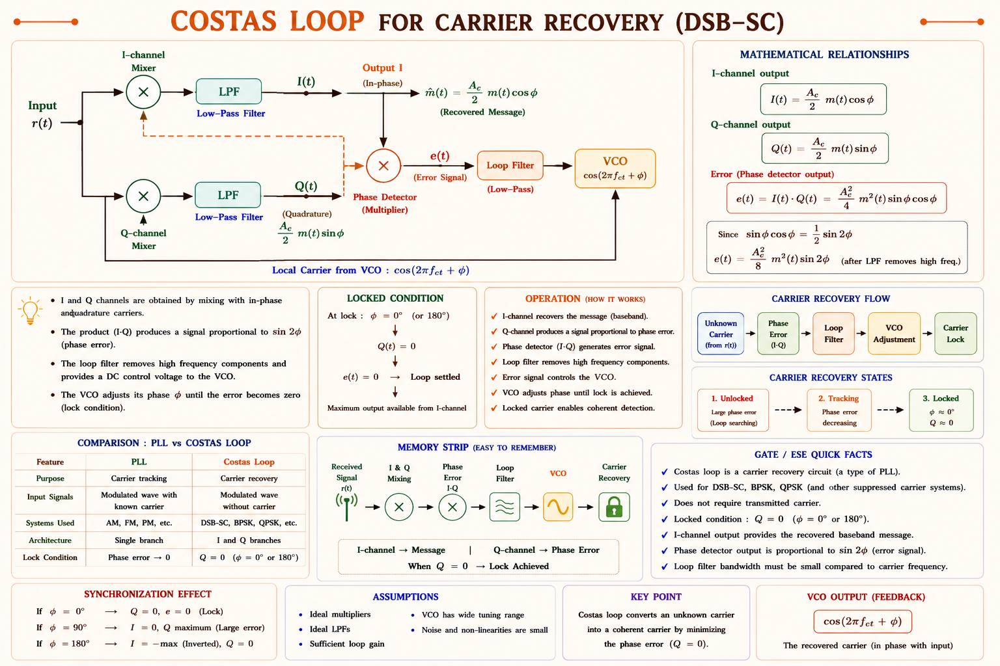
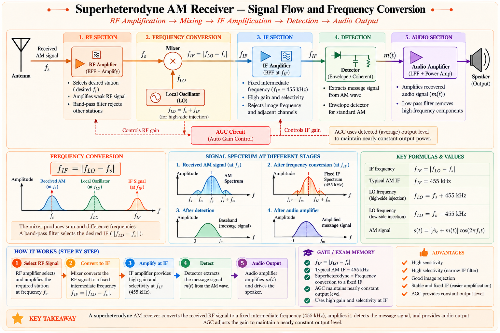
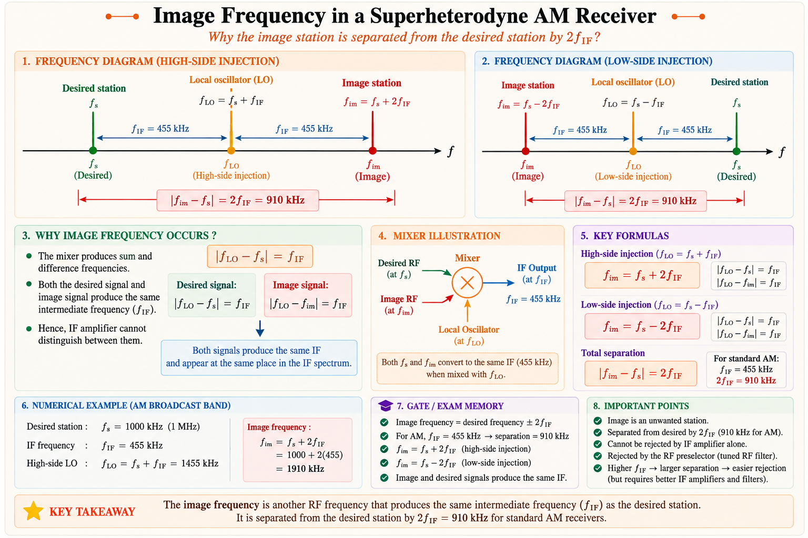
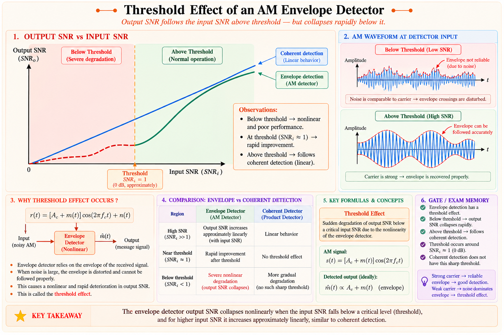

Envelope detectors, coherent (synchronous) detection, practical superheterodyne receivers, figure of merit, SNR analysis — complete derivations and GATE/IES concepts based on Haykin, Lathi, Proakis & Salehi.
Imagine you sent a message in a secret language (the message signal), wrapped it inside a high-frequency carrier wave, and broadcast it over the air. That is modulation. Demodulation is the act of unwrapping that carrier and recovering the original message — accurately and with minimal distortion.
In Amplitude Modulation (AM), the message information is encoded in the amplitude envelope of the carrier. After propagating through the channel, the received signal is a noisy, attenuated version of the transmitted waveform. The demodulator must extract the envelope and reject the carrier and noise as much as possible.[1]
Given a received AM signal \(r(t) = A_c[1 + k_a m(t)]\cos(2\pi f_c t) + n(t)\), recover \(m(t)\) with maximum fidelity. The two practical approaches are the envelope detector (non-coherent) and coherent (synchronous) detection.

Non-coherent (Envelope Detector): Does not need a local carrier reference.
Simple, cheap, widely used in AM broadcast. Works only when modulation index \(\mu \leq 1\).
Coherent (Synchronous) Detector: Requires an exact local carrier replica. Works
for all AM types — AM, DSB-SC, SSB. Gives better SNR performance.
Think of the AM waveform as a river whose banks follow the shape of your voice. The envelope detector simply traces those banks and ignores all the rapid oscillations of the carrier underneath.
The circuit uses a diode to pass only positive half cycles of the AM signal, and a resistor-capacitor (RC) low-pass filter to smooth out the rapid carrier oscillations, leaving only the slowly varying envelope — which is proportional to \(1 + k_a m(t)\).[1]

The RC time constant must be chosen carefully. If \(\tau = RC\) is too small, the capacitor discharges too fast and the output follows every carrier oscillation (the filter passes the carrier). If \(\tau\) is too large, the capacitor cannot discharge fast enough to follow the message — called diagonal clipping.[2]
where \(f_c\) is the carrier frequency and \(W\) is the highest message frequency (message bandwidth). This ensures the capacitor:

The envelope detector is only valid for conventional (full-carrier) AM with \(\mu \leq 1\). The AM signal is:
When \(\mu > 1\), the envelope \(A_c[1+\mu\cos(2\pi f_m t)]\) goes negative — the diode clips the negative envelope, causing severe distortion. For DSB-SC and SSB signals, the envelope is not proportional to the message, so envelope detection fails completely. Those signals require coherent detection.
Students confuse envelope detection with rectification. Envelope detection recovers the slowly varying amplitude profile. It works only when \(\mu \leq 1\) and does NOT work for DSB-SC or SSB signals. Applying an envelope detector to DSB-SC gives a full-wave rectified output — not the message.
Coherent detection requires exact frequency and phase synchronisation between the local oscillator at the receiver and the carrier used at the transmitter. The received signal is multiplied (mixed) with the local carrier, producing sum and difference frequency terms; a low-pass filter retains only the difference (baseband) term — the message.[1]

For a DSB-SC AM signal \(s(t) = A_c m(t)\cos(2\pi f_c t)\), the received signal (ignoring noise initially) is \(r(t) = A_c m(t)\cos(2\pi f_c t)\). Multiplying by the local carrier \(\cos(2\pi f_c t + \phi)\):[2]
The low-pass filter removes the \(2f_c\) term, leaving:
If the local oscillator has a phase error \(\phi\), the output is scaled by \(\cos\phi\). At \(\phi = 0\), maximum output. At \(\phi = 90^\circ\), output is zero (complete signal cancellation). Maintaining \(\phi \approx 0\) is the key challenge — requiring a phase-locked loop (PLL) or Costas loop at the receiver.
For DSB-SC or SSB signals, there is no carrier component to aid synchronisation. The Costas loop (proposed by Costas, 1956) is a self-synchronising device that simultaneously demodulates the message and tracks the carrier phase.[1]

A critical GATE topic is comparing modulation schemes on the basis of which detector works, power efficiency, and bandwidth. From Haykin's Communication Systems, Table 6.1 below summarises the key differences:[1]
| Parameter | Conventional AM | DSB-SC | SSB-SC |
|---|---|---|---|
| Transmitted Bandwidth | 2W | 2W | W |
| Carrier Component | Yes (wasted power) | No | No |
| Demodulator Type | Envelope Det. (simple) | Coherent only | Coherent only |
| Power Efficiency | Low (η ≤ 33.3%) | 100% | 100% |
| Figure of Merit (SNR ratio) | η/(1+η) — fraction of η | 1 (same as baseband) | 1 (same as baseband) |
| Implementation Complexity | Very simple | Moderate | Complex (SSB generation) |
| Application | Broadcast radio (MW) | Stereo pilot, data | HF voice, SSB radio |
For a single-tone message \(m(t) = A_m\cos(2\pi f_m t)\) with modulation index \(\mu = A_m k_a\), the power efficiency is \(\eta = \dfrac{\mu^2/2}{1 + \mu^2/2}\). At \(\mu = 1\), \(\eta = 1/3 \approx 33.3\%\). Two-thirds of transmitted power is wasted in the carrier — this is the fundamental inefficiency of conventional AM.
At \(\mu = 1\) (single tone): \(\eta = 1/3 \approx 33.3\%\) | At \(\mu \to 0\): \(\eta \to 0\) | Maximum possible: 50% (\(\mu\to\infty\), not practical)
The earliest practical AM receivers were Tuned Radio Frequency (TRF) receivers. They used a series of RF amplification stages, each tuned to the desired station frequency. While conceptually simple, TRF receivers suffered from:
Invented by Edwin Armstrong in 1918, the superheterodyne receiver remains the dominant architecture for AM (and FM) broadcast receivers, short-wave receivers, and many communication systems. The key idea: translate the desired signal to a fixed Intermediate Frequency (IF) where highly efficient filtering and amplification can occur.[3]

In the AM broadcast band (535 kHz – 1605 kHz), the universally adopted IF is 455 kHz (sometimes 450 kHz). The local oscillator runs at \(f_{LO} = f_s + f_{IF}\) for high-side injection, so the mixer output contains a component at \(f_{LO} - f_s = f_{IF}\).[3]
The most important problem in superheterodyne design is the image frequency. Any signal at frequency \(f_{image} = f_{LO} + f_{IF}\) will also mix with the LO to produce a component at \(f_{IF}\), appearing as interference.
The image frequency is \(2 f_{\text{IF}}\) away from the desired station. The RF preselector filter (bandpass filter before the mixer) must reject the image. A higher IF makes image rejection easier (image is farther away) but makes the IF filter harder to build with high Q. This is a fundamental tradeoff in superheterodyne design.

The received signal strength can vary enormously — from picowatts (distant station) to milliwatts (local station). Without AGC, a nearby powerful station would blast your speaker while a distant station would be inaudible. The AGC circuit samples the detector output, generates a DC control voltage proportional to received signal strength, and uses it to reduce the gain of the RF and IF amplifiers when the signal is strong.[2]
In the standard noise analysis model (Haykin, Ch. 8; Lathi Ch. 11), the received signal at the antenna is:[1]
where \(n(t)\) is bandlimited AWGN with PSD \(S_n(f) = N_0/2\) watts/Hz (two-sided). After passing through the bandpass filter of bandwidth \(B_T\), the noise power at the demodulator input is:
| SNR Definition | Formula | Location |
|---|---|---|
| Input SNR (SNR_i or \( SNR_C \)) | \(\dfrac{S_i}{N_i} = \dfrac{\overline{s^2(t)}}{N_0 B_T}\) | At demodulator input (before detector) |
| Output SNR (\( SNR_o \)) | \(\dfrac{S_o}{N_o}\) | At demodulator output (after detector + LPF) |
| Channel SNR (\( SNR_C \)) | \(\dfrac{S_T}{N_0 W}\) | Normalised to message bandwidth W |
| Figure of Merit | \(\dfrac{\text{SNR}_o}{\text{SNR}_C}\) | Measures demodulator efficiency |
For a conventional AM signal with single-tone modulation \(s(t) = A_c[1 + \mu\cos(2\pi f_m t)]\cos(2\pi f_c t)\):
The total transmitted power is:
After the envelope detector (in the high-SNR approximation, which is required for the envelope detector to work correctly), the output SNR is:[1]
where \(\eta = \mu^2/2\,/(1+\mu^2/2)\) is the power efficiency. The figure of merit is \(\eta < 1\) always — conventional AM is always inferior to baseband transmission in SNR performance.
For DSB-SC, all transmitted power goes into the sidebands (no carrier component). Coherent detection gives:[1]
DSB-SC achieves the same SNR as a baseband system using the same transmitted power. This is a factor of \(1/\eta\) better than conventional AM — a significant advantage in power-limited scenarios like deep-space communication.
SSB transmits only one sideband, halving the bandwidth. The SNR analysis (from Haykin) gives:[1]
SSB also achieves FOM = 1, identical to DSB-SC and to baseband! However, SSB uses half the bandwidth of DSB-SC. For a given transmitter power and noise power spectral density, SSB and DSB-SC are equal in SNR performance, but SSB requires less spectrum.
Baseband: FOM = 1 (reference). DSB-SC (coherent): FOM = 1. SSB-SC (coherent): FOM = 1. AM (envelope, μ=1): FOM = 1/3 ≈ −4.77 dB. The price paid for simple envelope detection in AM is a 4.77 dB SNR penalty relative to DSB-SC.
The high-SNR analysis above breaks down at low SNR. When \(\text{SNR}_i \ll 1\), the noise dominates the signal, and the envelope detector enters the threshold region. Below the threshold, the SNR at the output degrades catastrophically — much faster than the linear degradation in coherent detection. This is a fundamental nonlinearity of the envelope detector.[4]

| Quantity | AM (Envelope Det.) | DSB-SC (Coherent) | SSB-SC (Coherent) |
|---|---|---|---|
| Bandwidth \( B_T \) | 2W | 2W | W |
| \( \text{FOM} = \frac{\text{SNR}_o}{\text{SNR}_c} \) | η = μ²/2 / (1+μ²/2) | 1 | 1 |
| FOM at μ = 1 (single tone) | 1/3 | 1 | 1 |
| Carrier required at Rx | No (simple) | Yes (PLL/Costas) | Yes (PLL/Costas) |
| Works below threshold | No (collapses) | Yes (linear) | Yes (linear) |
(a) LO Frequency:
(b) Image Frequency:
(c) Image Rejection: The preselector is a BPF centred at 1000 kHz with bandwidth \(100\text{ kHz}\), so it passes 950 to 1050 kHz. The image at 1910 kHz is well outside this band — the image is rejected by the preselector attenuation at 1910 kHz. This is determined by the Q of the RF preselector filter.
Image = Desired + 2×IF. The image is always 910 kHz above the desired for AM receivers with 455 kHz IF. This is a direct GATE formula to memorise.
(a) Power Efficiency:
(b) Channel SNR (\( SNR_C \)):
(c) Output SNR (Envelope Detector):
(d) Figure of Merit:
For the same transmitted power, coherent DSB-SC would give FOM = 1, which is \(1/0.242 \approx 4.13\) times better — about 6.16 dB improvement.
An AM signal has carrier frequency \(f_c = 1\) MHz and message bandwidth \(W = 5\) kHz. For the envelope detector to work without distortion, the RC time constant should satisfy:
Explanation: The correct condition is \(1/f_c \ll RC \ll 1/W\). This ensures the capacitor: (i) does not follow the carrier oscillations (requires \(RC \gg 1/f_c\)) and (ii) can follow the slowly varying message envelope (requires \(RC \ll 1/W\)). Answer: B.
An AM superheterodyne receiver has an IF of 455 kHz. It is tuned to a station at 720 kHz using high-side injection. What is the image frequency?
Solution: \(f_{image} = f_s + 2f_{IF} = 720 + 2(455) = 720 + 910 = 1630\) kHz. Answer: C.
For full AM (conventional AM) with modulation index \(\mu = 1\) and single-tone modulation, what is the figure of merit when envelope detection is used?
Explanation: At \(\mu = 1\), \(\eta = (1/2)/(1+1/2) = (1/2)/(3/2) = 1/3\). The FOM = \(\eta = 1/3\). Answer: C.
In a coherent detector for DSB-SC, the local oscillator has a phase error of \(\phi = 45^\circ\) relative to the carrier. What is the reduction in output SNR compared to perfect synchronisation?
Solution: Output is scaled by \(\cos\phi\). Power scales as \(\cos^2\phi = \cos^2(45^\circ) = 1/2\). So SNR drops by a factor of 2 = 3 dB. Answer: B.
"Carrier Quick, Message Slow" → RC must be slow for the carrier (\(RC \gg T_c\)) but fast compared to the message (\(RC \ll T_m\)). Think of the capacitor as a sponge that absorbs rapid carrier oscillations but flows with the slow envelope.
For AM receivers with \( f_{\text{IF}} = 455 \text{ kHz} \): Image = Desired + 910 kHz. The number 910 = 2 × 455. Easy to remember: "Nine-Ten is the image gap in standard AM."
🟢 DSB-SC coherent: FOM = 1
🟢 SSB-SC coherent: FOM = 1
🟡 AM envelope (μ=1, single tone): FOM = 1/3
🔴 AM with phase error \( \phi \): \( \text{FOM} = \eta \cdot \cos^2\phi \)
Have a doubt about AM demodulation, noise analysis, or receiver design? Ask your GATE tutor.
Diode + RC LPF. Requires \( \mu \leq 1 \) and \( \frac{1}{f_c} \ll RC \ll \frac{1}{W} \). Fails below threshold SNR. Simple, no carrier reference needed. Used in AM broadcast.
Multiply by \( \cos(2\pi f_c t + \phi) \) then LPF. Phase error \( \phi \) degrades output by \( \cos^2\phi \). Works for AM, DSB-SC, SSB. FOM = 1 for DSB-SC and SSB.
RF Amp → Mixer → IF Amp (455 kHz) → Detector → Audio Amp. \( f_{\text{LO}} = f_s + f_{\text{IF}} \). Image = \( f_s + 2f_{\text{IF}} \) = 910 kHz away. AGC maintains constant output.
\( \text{FOM} = \frac{\text{SNR}_o}{\text{SNR}_c} \). AM (\( \mu=1 \)): \( \frac{1}{3} \). DSB-SC: 1. SSB: 1. DSB-SC is 4.77 dB better than AM at \( \mu=1 \). Coherent detection never has threshold effect.
AWGN: \( N_i = N_0 \cdot B_T \). AM \( \text{SNR}_o = \eta \cdot \text{SNR}_c \). DSB-SC \( \text{SNR}_o = \text{SNR}_c \). Threshold collapse for envelope detector at low SNR. Coherent: linear SNR degradation.
I and Q branch multipliers + LPF each. Product gives error signal → VCO. Recovers DSB-SC carrier phase without pilot tone. Fundamental to modern receivers.
Angle Modulation — FM and PM Fundamentals: instantaneous frequency, frequency deviation, Carson's rule for bandwidth, Bessel function spectrum, FM discriminators, PLL-based demodulators, preemphasis and deemphasis, and SNR comparison with AM.
All technical content is derived from the following standard textbooks. All explanations, derivations, diagrams, and examples are original to Aarova AI.